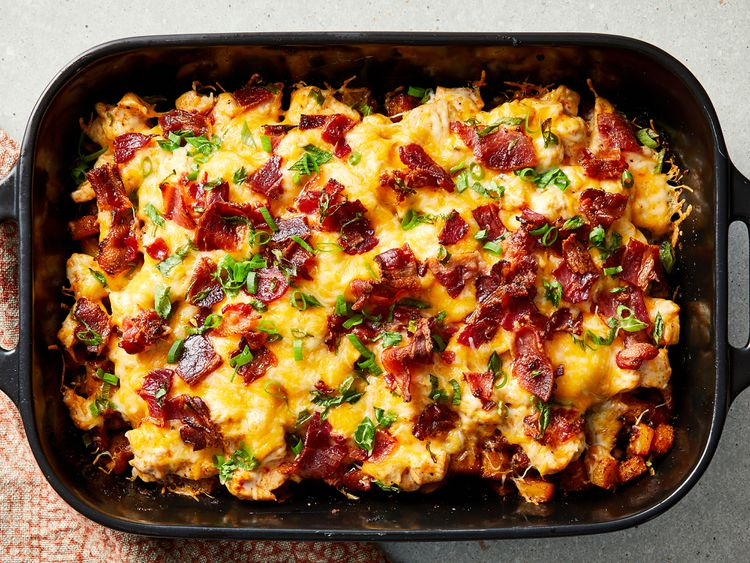

Buffalo Chicken and Rosted Potato Casserole
Home

Description
All in one baked comfort dish that translates the flavours of spicy buffalo wings and loaded baked potatoes into a single casserole
Ingredients
- Cooking Spray
- 6 tablespoons hot pepper sauce
- 1/3 cup olive oil
- 2 tablespoons garlic powder
- 1 tablespoon freshly ground black pepper
- 1 1/2 teaspoons salt
- 8 potatoes cut into 1.5 cm cubes
- 910 grams skinless, boneless chicken breasts halves, cut in 1.5 cm cubes
- 2 cups shredded Mexican cheese blend (such as Great Value Fiesta Blend)
- 1 cup crumbled cooked bacon
- 1 cup diced green onions
Steps
- Preheat the oven to 260 degrees celcious
- Spray a 23 x 33 cm baking dish with cooking spray
- Heat hot pepper sauce, olive oil, garlic powder, black pepper, paprika and salt in a large skillet over low heat
- Stir until thoroughly combined. Turn off heat
- Toss potatoes in batches with the hot pepper sauce mixture to coat
- Use a slotted spoon to transfer the potatoes to the prepared baking dish
- Mix chicken into the remaining sauce and allow to marinate while potatoes roast
- Bake potatoes until tender inside and crisp and brown outside (45 - 50 Minutes stirring every 10 - 15 minutes)
- Reduce oven heat to 205 degress celcious
- Spread chicken cubes over roasted potatoes
- Sprinkle shredded cheese, cooked bacon and green oninons over chicken and return to the oven
- Bake in oven until chicken is cooked through and cheese topping is bubbling, about 15 minutes